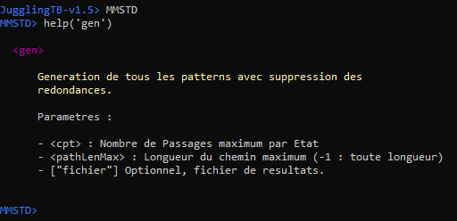
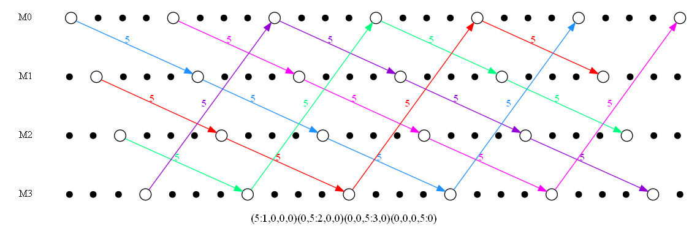
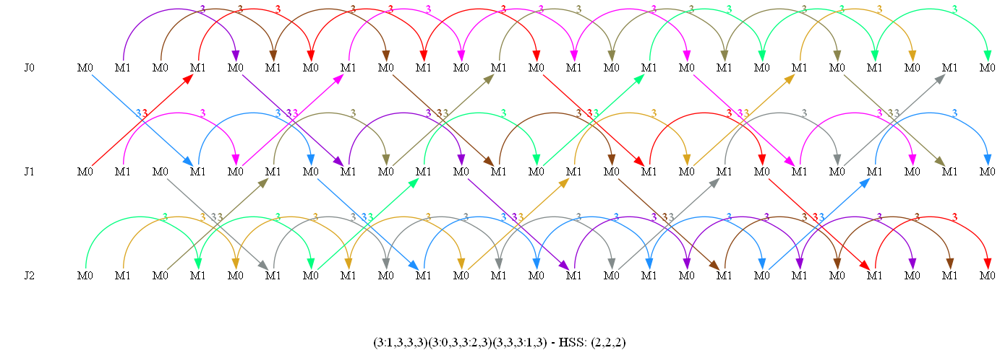

1 - INTRODUCTION
L'objectif principal de jugglingTB est d'offrir une boîte à outil pour différentes notations jonglistiques. Il est écrit en Perl avec pour objectif d'être très facilement étendu pour de nouveaux modules ou de nouvelles commandes. Il a été développé incrémentalement en fonctions des besoins que j'avais pour l'écriture de différents articles. Il ne faut donc pas s'attendre à ce que tout soit vraiment optimisé, à l'origine c'était un besoin personnel uniquement que j'adapte en fonction. ;-/. Actuellement il contient des modules pour les notations :
- BTN : Body Trick Notation
- SOU Etendue: Side-Over-Under Notation
- MMSTD: Mills Mess State Transition Diagram
- LADDER: Ladder Notation
- SSWAP: Siteswap Notation
- STACK: Stack Notation
- HTN: 3-Layers Notation/Harmonic Throws Notation
- SPYRO: Spyrograph pour Spin/Antispin/Hybrides/Isolations ...
- OSS/HSS: Object/Hand Siteswap Notation
- MHN: Multi-Hand Notation
- MJN: Multi-Juggler Notation telle qu'utilisée dans JugglingLab
- MLHSS: Multi-Layer Hand Siteswap Notation : combine HSS sur une notation MHN
Le module SSWAP utilise le génial JugglingLab de Jack Boyce. Et pour mes besoins personnels j'y ai intégré différents outils:
- jdeep de Jack Boyce
- HTNMaker de Shawn Pinciara
- LABInfinite de MCP
- juggleSpyro, un de mes autres projets
- PowerJuggler de Marco Tarini
- Poï Flowers de David Lyons
- realsim de Pedro Teodoro
- Polyrhythm-Fountain de Josh Mermelstein
2 - INSTALLATION & BESOINS
Pour utiliser cet outil vous avez 2 possibilités :
- Soit utiliser directement un binaire;
- Soit partir des sources, et installer les modules nécessaires.
Binaires
Vous trouverez une version binaire pour Windows 64bits (packagée en perl v5.32.1 par pp (PAR::Packer)) nommée jugglingTB.exe. Dézipper simplement le fichier jugglingTB_1.6-src.zip
Vous aurez ensuite éventuellement besoin de reparamétrer conf.ini indispensable pour jugglingTB. Ce fichier contient en effet différentes variables utilisées par l'outil :
|
# Langage LANG="FRENCH" # Commande pour lancer le Navigateur Web HTTP_BROWSER="C:/Program Files/Microsoft/Edge/Application/msedge.exe" # Taille des Colonnes du display XSIZE="60" # Comportement par defaut au lancement de JugglingToolbox. 0 : desactive, 1 active # Usage lors du lancement de jugglingTB : jtbOptions_u=0; # version de JugglingTB jtbOptions_v=0; # Colorisation de JugglingTB jtbOptions_c=1; # Aide de JugglingTB jtbOptions_h=0; # Aide etendue de JugglingTB jtbOptions_H=0; # Autocompletion de JugglingTB jtbOptions_a=0; # Gestion Unicode dans lang.pm jtbOptions_s=0; ### Paramètre des modules ### # Répertoire des fichiers résultats RESULTS="results" # Répertoire des fichiers temporaires TMPDIR="tmp" # Path de JugglingLab (Commence par [CWD] pour un chemin relatif) JUGGLING_LAB_PATH="[CWD]/data/JugglingLab/v1.4.1" # JML Version pour JugglingLab JUGGLING_LAB_JML_VERSION="1.2" # Path Absolu pour Binaires GRAPHVIZ (nécessaire pour dessiner les Diagrammes # Etats/Transitions) (Mod LADDER/SSWAP par exemple) GRAPHVIZ_BIN="C:\Program Files\Graphviz\bin" # Binaire GNUPLOT (nécessaire pour dessiner les grilles HTN) (Mod HTN) GNUPLOT_BIN="C:\Program Files\Gnuplot\bin\gnuplot.exe" # Taille des colonnes Excel (Mod SSWAP) EXCELCOLSIZE="auto" |
Il ne vous restera plus ensuite qu'à lancer l'exécutable. A la première exécution il sera peut-être un peu plus long à démarrer.
Sources
-
Si vous souhaitez partir des sources, vous devez donc déja disposer d'une version de Perl ... chose aisée pour Linux. Sous Windows vous pouvez opter pour ActivePerl (testé avec v5.8, v5.10, v5.12, v5.14, ... ) ou Strawberry Perl (testé avec v5.30, v5.32).
Pensez ensuite à ajouter le chemin de l'exécutable Perl dans votre Path. -
Il vous faudra ensuite bien entendu récupérer les sources de jugglingTB et les dézipper.
-
Certains des modules distribués utilisent des modules perl du CPAN (Comprehensive Perl Archive Network) :
- Devel-Symdump
- Set-Scalar
- Parse-Yapp
- Perl4-CoreLibs
- Excel-Writer-XLSX
- File-Grep
- File-Copy-Recursive
- Chart-Gnuplot
- HTTP-Server-Simple
- Win32-Console-ANSI : indispensable si vous souhaitez avoir des couleurs sur les terminaux Windows "Cmd".
- Term-ReadKey : util pour l'Autocomplétion sur Windows (!! Pensez à répéter 4 fois les pressions sur la touche "ENTER" pour palier un bug Perl sous Windows)
Vous aurez donc soit à les installer par vous-même manuellement ou en utilisant le script __internal-install.pl :
perl -I. __internal-install.pl
Ce script générera et installera les modules perl nécessaires.
-
Ce script d'installation configurera également conf.ini indispensable pour jugglingTB. Ce fichier contient en effet différentes variables utilisées par l'outil.
Par défaut chacune des options de lancement est désactivée. Pour changer ce comportement par défaut vous devrez positionner la valeur adéquate à 1. Dans ce cas la désactivation des options au lancement de jugglingTB est explicitement indiquée par l'utilisation du préfix "-no" au lieu de "-".
Les exemples donnés par la suite peuvent être obsolètes selon la version des modules usités mais ils restent cependant des exemples concrets concernant la façon générale d'utiliser jugglingTB!
3 - LANCEMENT
Voici la façon de lancer jugglingTB :
|
USAGE : perl -I . [[-|-no][a|c|h|H|i|s|u|v]] ./jugglingTB.pl ou jugglingTB.exe [[-|-no][a|c|h|H|i|s|u|v]] -a : Active l'autocompletion (C^d et "TAB", C^U pour effacer). [Fonctionne mal avec Cmd sur MsWindows ;-(]. -c : Colorise jugglingTB. Fonctionne uniquement sur un terminal ANSI [ie Cmd sur MsWindows ne fonctionnera pas ;-(] -h : Aide de jugglingTB. -H : Aide etendue de jugglingTB. -i : Fichier de Configuration pour jugglingTB (Défaut:conf.ini). -s : Affiche les characteres speciaux (Unicodes) des Menus. -u : Usage pour lancer jugglingTB. -v : Done la version sans lancer jugglingTB. Par défaut chacune de ces options est désactivée. Ce comportement peut être modifié dans le fichier conf.ini. Dans ce cas la désactivation des options est explicitement indiquée par l'utilisation du préfix "-no" au lieu de "-". Différents paramètres de configuration peuvent également être positionnés dans "conf.ini" (Tel que le langage usité par exemple). Pour disposer des menus en français : LANG="FRENCH"; ou si vous les préférez en anglais : LANG="ENGLISH"; |
A l'issue du lancement, vous obtiendrez une invite. Vous pouvez dès à présent entrer dans un Menu de Module en entrant son nom, lister les menus/commandes disponibles par help et/ou help2, exécuter une commande DOS/Unix préfixée par ! ...
Pour accéder à un menu de Module, entrez simplement son nom ou au moins ses 2 premières lettres, celles-ci seront complétées pour former le nom du premier module les incluants selon l'ordre alphabétique. D'où l'intérêt d'éviter au maximum de définir des modules avec des noms proches. Une fonction d'un module MOD peut directement être accédée par son nom dans le Menu MOD ou bien par MOD::LaFonction depuis n'importe quel Menu. Dans le premier cas on parlera de chemin relatif pour le nommage. Dans le second cas il s'agit d'un chemin absolu.
Vous obtiendrez de l'aide sur un module en tapant help("LeModule").
Pour obtenir de l'aide sur une commande particulière vous pouvez à partir de son menu de Module taper help("LaCommande()")
(Chemin Relatif), ou depuis n'importe où taper help("LeModule::LaCommande()") (Chemin Absolu).
Si vous ne mettez pas d'arguments à la commande help() celle-ci vous donnera des informations sur l'ensemble des commandes
disponibles depuis le Module courant.
La commande help2() est similaire à la commande help() à la différence qu'elle donne plus d'information avec en particulier des informations sur les différents paramètres des fonctions.
4 - JUGGLINGTB
Voici un exemple d'utilisation de jugglingTB correspondant aux étapes suivantes :
- Accès au Module BTN (en v1.2.2).
- Affichage de l'aide de la commande gen.
- Exécution de la commande gen afin d'obtenir les lancers BTN traversant au maximum 2 trous.
l'appel aux différentes commandes des modules se fait de manière similaire à un appel de fonction dans la majeur partie des langages. Les paramètres sont entre ( et ) séparés par des ,. Les paramètres indiqués comme optionnels peuvent être omis. Les chaînes de caractères sont encadrées par au choix: " ou '.
Si l'on reprend l'exemple précédent en utilisant le paramètre optionnel permettant l'écriture fichier on obtient :
| gen(2,"toto.txt"); |
4.1 - OBTENIR DE L'AIDE
Les commandes suivantes vous permettront d'obtenir de l'aide :
- help, help2 : Sans paramètre, liste l'ensemble des commandes visibles dans le Module courant; avec paramètre, donne l'aide associé à la commande (Nommage absolu/relatif) ou au module passée en paramètre
- help("LeModule"), help2("LeModule") : depuis n'importe quel Menu, liste l'ensemble des commandes du module indiqué ainsi que leurs paramètres
Voici un exemple correspondant aux étapes suivantes :
- Accès au Module MMSTD (en v1.4).
- Affichage de l'aide générale du module MMSTD.
- Affichage de l'aide de la commande gen.
- Affichage de l'aide de la commande isSymetric.
4.2 - EXECUTER UNE COMMANDE DOS/UNIX
L'environnement intéractif de jugglingTB vous permet d'accéder au système sous-jacent par préfixage de vos commandes Shell par le caractère !. Ainsi, vous pourrez lire un fichier sauvé au travers de jugglingTB ...
Dans l'exemple ci-dessous, effectué sous Windows, on souhaite lister le répertoire courant :
4.3 - AFFICHAGE DU RESULTAT
Il est parfois intéressant de désactiver l'affichage des résultats d'une commande. Ce résultat étant en effet en général retourné par la commande, on peut vouloir le récupérer pour une commande supplémentaire sans l'afficher.
Si la commande permet un tel comportement, celui-ci sera indiqué par l'aide de la commande. Il s'agit en général d'utiliser un paramètre optionnel (positionné à -1) lors de l'appel à la commande.
La commande isSymetric du Module MMSTD permet un tel comportement :
4.4 - PLACER LES RESULTATS DANS UN FICHIER
Il est parfois intéressant de stocker les résultats d'une commande dans un fichier.
Si la commande permet un tel comportement, celui-ci sera indiqué par l'aide de la commande. Il s'agit en général d'utiliser un paramètre optionnel (positionné au nom du fichier) lors de l'appel à la commande.
La commande gen du Module MMSTD (en v1.4) permet un tel comportement :
4.5 - COMBINER LES MODULES
Les différentes commandes peuvent être combinées entre elles entre modules différents, le résultat rendu par une commande étant un paramètre d'une autre commande. Dans ce cas d'utilisation, les commandes doivent être préfixées par leur module respectif (création d'un chemin absolu).
Afin d'épurer les résultats il peut être intéressant de désactiver les affichages des commandes intermédiaires comme indiqué précédemment.
voici à titre d'exemple, les étapes suivantes :
- Accès au Module SOU.
- Affichage de l'équivalent MMSTD d'un pattern SOU à l'aide de la commande toMMSTD.
- Accès au Module MMSTD.
- Affichage de l'équivalent SOU d'un pattern MMSTD à l'aide de la commande toSOU.
- Accès au Module Main.
- Affichage de l'équivalent SOU d'un pattern MMSTD obtenu depuis un pattern SOU (fonction Identité obtenue par combinaison de commandes) .
Le menu intéractif de jugglingTB permet l'exécution de commandes classiques Perl, permettant ainsi la sauvegarde de résultats intermédiaire pour leur éventuel affichage ultérieur.
voici à titre d'exemple, les étapes suivantes :
- Accès au Module BTN.
- Affichage de l'aide pour la commande isValid.
- Vérification sans affichage de résultat que la trajectoire BTN OPALAC est valide et stockage du résultat dans la variable Perl v.
- Affichage de la variable v par la commande Perl print.
5 - EXEMPLES
De nombreux exemples sont normalement disponibles au sein de chaque module par la fonction __test().
5.1 LADDER NOTATION
Le Module LADDER vous permet de dessiner un diagramme en échelle à partir d'un Siteswap donné. Il est nécessaire de disposer au préalable de l'outil Graphviz et d'avoir correctement renseigné son chemin dans <conf.ini>. Les 2 commandes ci-dessous vous permettent de tracer 2 colorisations différentes d'un même Siteswap.
|
LADDER::draw("24[54]","test1.png") LADDER::draw("24[45]","test2.png") |
Les diagrammes tracés sont alors :

Ce module offre différentes opérations possibles sur les diagrammes comme par exemple le tracé Time-Reversed :
|
LADDER::inv("24[54]","test3.png") |
Le résultat obtenu est alors :
Le Siteswap résultant est calculé d'après le diagramme et peut éventuellement être au format MultiSynchrone. Pour un résultat plus mathématique on utilisera en complément la fonction timeRev du module SSWAP.
5.2 SITESWAP
Un petit exemple rapide pour récupérer quelques informations sur un Siteswap:
Le Module SSWAP vous permet également de dessiner les diagrammes Siteswaps Vanilles et Synchrones à partir d'un Siteswap donné. Il est nécessaire de disposer au préalable de l'outil Graphviz et d'avoir correctement renseigné son chemin dans <conf.ini>. Les 2 commandes ci-dessous vous permettent de tracer les diagrammes d'un Siteswap Vanille puis d'un Siteswap Synchrone. Le choix de l'un ou l'autre est automatique mais au besoin on peut le forcer.
|
SSWAP::draw("423","test4.png") SSWAP::draw("(6x,4)*","test5.png") |
Les diagrammes tracés sont alors :
Il est possible également de tracer des Diagrammes Etats/Transitions ou des Diagrammes Etats/Transitions Réduits ou tout simplement de générer les Matrices associées dans un fichier Excel éventuellement. Pour générer les diagrammes Etats/Transitions il est nécessaire de disposer au préalable de l'outil Graphviz et d'avoir correctement renseigné son chemin dans <conf.ini>. La commande ci-dessous vous permet de tracer le diagramme Etats/Transitions Vanille de 3 objets avec une hauteur maximum de lancer de 5.
|
SSWAP::drawStates("V",3,5,"test6.png") |
Le diagramme tracé est alors :
Pour tracer le Diagramme Etats/Transitions Vanille Réduit associé de 3 objets avec une hauteur maximum de lancer de 5 on utilisera la commande ci-dessous:
|
SSWAP::drawStatesAggr("V",3,5,"test7.png") |
Le diagramme tracé est alors :
Pour un autre petit exemple concret, supposons à présent que vous voulez générer tous les Siteswaps Synchrones de 4 objets contenant 2 fois les valeurs 6,4,4,2 parce que vous avez en tête les Siteswaps bien connus à 4 balles (6x,4)(2,4x)*, (6x,4)(4,2x)* ... et que vous en cherchez d'autres assez proches.
(6x,4)(2,4x)* |
(6x,4)(4,2x)* |
(6,4x)(4x,2)* |
(6,4x)(2x,4)* |
(6,4)(4x,2x)* |
(6,4)(2,4)* |
(6x,4x)(4,2)* |
(6x,4x)(2x,4x)* |
La fonction genSSFromThrows du module SSWAP peut vous aider à générer ces Siteswaps. Dans le cas présent on supprime les équivalences avec '-r 1' (mais c'est peut-être à éviter si ça vous semble trop long) et on génère le tout dans un fichier JML pour JugglingLab. La fonction anim du module SSWAP lance JugglingLab et il ne reste plus qu'à charger les résultats pour pouvoir visualiser ceux-ci. C'est de cette manière que j'ai généré les GIF Animés précédents.
Si on voulait uniquement les Siteswaps avec une symétrie, on aurait pu utiliser l'option supplémentaire '-a y' et ainsi réduire le nombre de valeurs à considérer dans les permutations et de surcroît le temps de calcul. On aurait ainsi retrouvé uniquement nos 8 Siteswaps connus:
Le Module SSWAP offre ainsi quantité de fonctions différentes de génération ou de manipulation de Siteswaps. Rendez-vous à l'annexe de ce README pour un descriptif de celles-ci!
5.3 OBJECT/HAND SITESWAP (OSS/HSS)
Le Module HSS s'intéresse à la notation Object/Hand Siteswap. Il est nécessaire de disposer au préalable de l'outil Graphviz et d'avoir correctement renseigné son chemin dans <conf.ini>.
Par exemple pour tracer l'objet Siteswap 3 sur le Hand Siteswap 13 on utilise la commande:
|
HSS::draw("3","13","test9.png") |
Le diagramme tracé est alors :
En animation ce pattern OSS:3/HSS:13 donne :
5.4 MULTI-HAND NOTATION (MHN)
Le Module MHN s'intéresse à la notation Multi-Hand. Il est nécessaire de disposer au préalable de l'outil Graphviz et d'avoir correctement renseigné son chemin dans <conf.ini>.
Par exemple pour tracer le MHN de la Cascade 4 Mains, 5 Objets on utilise la commande:
|
MHN::draw('(5:1,0,0,0)(0,5:2,0,0)(0,0,5:3,0)(0,0,0,5:0)','test10.png') |
Le diagramme tracé est alors :
- test10.png :

En animation, en considérant que M0, M1 sont respectivement les mains droite des jongleurs 0 et 1 et M2, M3, leur main gauche, ce pattern donne :
Dans certains cas ces lignes droites ne sont pas adaptées, on utilisera alors différents modèles de splines pour le tracé selon le besoin (cf doc):
|
MHN::draw('(5:1,0,0,0)(0,5:2,0,0)(0,0,5:3,0)(0,0,0,5:0)','test10b.png','-F 1') |
Le diagramme tracé est alors :
En l'occurence on a ici un pattern Asynchrone qu'on peut tracer comme tel via :
|
MHN::draw('(5:1,0,0,0)(0,5:2,0,0)(0,0,5:3,0)(0,0,0,5:0)','test10b.png','-A Y') |
Le diagramme tracé est alors :
Le tracé calcule en fait les valeurs OSS/HSS. Ici il trouve OSS:5555, HSS:4444
Imaginons également qu'on recherche la Matrice MHN du Pattern OSS 97531 avec un HSS 531. Ceci peut-être fait depuis le Module HSS. Le résultat obtenu est validable sous le module MHN et peut ensuite être tracé.
Le diagramme tracé est alors :
5.5 MULTI-LAYER HAND SITESWAP NOTATION (MLHSS)
L'idée est d'appliquer un HSS sur chaque ligne d'une matrice MHN. Chaque ligne MHN correspond donc à plusieurs mains lançant de manière asynchrone. Ceci permet ainsi de simplifier les matrices MHN. Chaque ligne peut ainsi représenter un jongleur par exemple.
En MLHSS, le passing classique à 3 jongleurs avec un poste en 2 temps et des ailiers en 4 temps peut être décomposé par jongleur. Chaque jongleur représente une ligne MHN avec un HSS de 2. Il peut être tracé par :
| MLHSS::draw('(3:1,3,3,3)(3:0,3,3:2,3)(3,3,3:1,3)','(2,2,2)','test12.png','-f 0 -a n -k M') |
Le diagramme tracé est alors :
- test12.png :

Si on souhaite également tracer les composantes HSS on peut utiliser :
| MLHSS::draw('(3:1,3,3,3)(3:0,3,3:2,3)(3,3,3:1,3)','(2,2,2)','test12b.png','-f 0 -k M') |
Le diagramme tracé est alors :
En traçant les composantes HSS de manière invisible on peut éventuellement obtenir un graphe légéremment différent :
| MLHSS::draw('(3:1,3,3,3)(3:0,3,3:2,3)(3,3,3:1,3)','(2,2,2)','test12c.png','-f 0 -y 4 -k M') |
Le diagramme tracé est alors :
- test12c.png :

5.6 HARMONIC THROWS NOTATION (NOTATION 3-COUCHES)
Le Module HTN s'intéresse à la notation 3-couches ou notation harmonique de Jonathan Lardillier et en particulier aux grilles associées. Gnuplot et éventuellement Ghostscript et ImageMagick (converter et extension Perl sinon vous aurez une erreur "Invalid Parameter - 90") doivent avoir été installés au préalable et le chemin de Gnuplot renseigné dans <conf.ini>.
Par exemple pour tracer la Grille du Siteswap 24[54] à 5 objets on utilise la commande:
|
HTN::drawGrid("24[54]","test8.png") |
Le diagramme tracé est alors :
Bien entendu, étant donné que la notation 3-couches s'intéresse plus à des séquences plus courtes et moins périodiques que les Siteswaps Vanilles ou Synchrones, vous serez probablement appelés à créer ces graphes via la notation MultiSynchrone.
6 - ETENDRE JUGGLINGTB
jugglingTB est très simple à étendre. (cf modules/MODTEST.pm pour un exemple de nouveau module). En premier vous devez déclarer le package ainsi que les procédures nécessaires à jugglingTB :
Chaque commande du module doit également être déclarée :
|
our %MODTEST_CMDS = ( 'cmd1' => ["cmd1hlp1","cmd1hlp2"], 'cmd2' => ["cmd1hlp1","cmd1hlp2"] ); |
La première chaîne indique le message d'aide à afficher par les commandes help/lsc. La seconde précise les paramètre de la commande tels qu'ils seront affichés par help("cmd1") depuis le Menu MODTEST par exemple.
Les commandes doivent bien entendue également être définies:
|
sub cmd1 { print colored [$common::COLOR_RESULT], "This is the Cmd1 Result\n"; } sub cmd2 { print colored [$common::COLOR_RESULT], "This is the Cmd2 Result\n"; } |
Si vous souhaitez utiliser plusieurs langages les chaînes de caractères affichables doivent être déclarées en tant que constante dans lang.pm.
Le module MODTEST doit ensuite être ajouté dans jugglingTB.pl :
|
use modules::MODTEST; my @MODULES= ("BTN", "SOU", "MMSTD", "LADDER", "SSWAP", "SPYRO", "HTN", "STACK", "MODTEST", "HSS", "MHN"); |
Toutes les aides, menus, exécution de commandes seront alors automatiquement pris en compte par jugglingTB.
7 - CREDITS & LICENCE
Cet outil est soumis à la license LGPL :
This tool is free software; you can redistribute it and/or modify it under the terms of the GNU General Public License as published by the Free Software Foundation; either version 3 of the License, or (at your option) any later version.
This program is distributed in the hope that it will be useful, but WITHOUT ANY WARRANTY; without even the implied warranty of MERCHANTABILITY or FITNESS FOR A PARTICULAR PURPOSE. See the GNU General Public License for more details.
8 - BUGS
Tout bug trouvé peut être envoyé à l'adresse suivante :
frederic.roudaut@free.fr
ANNEXE - MODULES
Cette annexe présente les modules courants existants en standard, leurs commandes ainsi que leurs paramètres.
MAIN
|
============= COMMANDES PRINCIPALES ============= ! : Lance une commande Shell. ? : Résultat de la commande précédente. <1> pour OK exit : Quitte le Programme. "bye" ou "quit" peuvent egalement être utilisés. help : Utile dans le Menu des modules pour une aide générique ou spécialisée. <help>, <help("command")> ou encore <help("module")>. Utilisez : - <help> pour obtenir l'Aide courante dans le Menu Principal ou le Menu d'un Module; - <help("command")> pour obtenir une Aide spécifique sur une commande du module courant; - <help("module")> pour obtenir une Aide spécifique sur un Module; - <help("command::module")> pour obtenir une Aide spécifique sur une commande d'un module donné. help2 : Utile pour obtenir les paramètres des commandes. Utilisez : - <help2> pour obtenir l'ensemble des commandes disponibles du module courant ainsi que leur paramètres; - <help2("command")> pour obtenir une Aide spécifique détaillée sur une commande du module courant; - <help2("module")> pour obtenir une Aide spécifique et détaillée sur les paramètres des commandes d'un Module; - <help2("commande::module")> pour obtenir une Aide spécifique et détaillée sur les paramètres d'une commande d'un Module donné. lsc : Liste l'intégralité des commandes disponibles. lsc2 : Liste l'intégralité des commandes disponibles ainsi que leurs paramètres. main : Menu principal. mods : Affiche les modules disponibles. usage : Options au lancement de jugglingTB. version : Retourne la version du Module. |
BTN
Dans ce module un lancer BTN sera composé d'une succession de trous pris parmi AC, AL, BOL ainsi que de l'opérateur
OP. (Minuscule ou Majuscule).
Exemples : OPALAC, BOLAL, OPALOPAC ...
|
BTN - BTN juggling Notation (v1.2.2) ----------------------------------------- BTNParity : Donne la parité BTN. Paramètres : - <Throw> : Lancer. - [-1] Optionnel, retourne le résultat sans l'afficher. En retour 0 indique une parite Paire, 1 indique Impaire gen : Donne les lancers BTN limités par le nombre de trous traversés. Paramètres : - <int> Nombre maximum de trous traversés [>4 réservé aux Extra-Terrestres ;-)]. - ["fichier"] Optionnel, fichier de résultats. gen2 : Donne les lancers BTN sans les lancers dont le corps contient 2 trous successifs identiques. Paramètres : - <int> Nombre maximum de trous traversés [>4 réservé aux Extra-Terrestres ;-)]. - ["fichier"] Optionnel, fichier de résultats. inv : Donne le lancer BTN Time Reversed associé. Paramètres : - <Lancer> : Lancer dont on veut obtenir le Time Reversed. - <Parite> : Parité du lancer (0: paire, 1: impaire). - [-1] Optionnel, retourne le résultat sans l'afficher. isValid : Teste la validité du lancer BTN. Paramètres : - <Lancer> : Lancer à valider. - [-1] Optionnel, retourne le résultat sans l'afficher. size : Donne la taille du lancer en nombre de trous traversés. Paramètres : - <Throw> : Lancer. - [-1] Optionnel, retourne le résultat sans l'afficher. |
SOU
Dans ce module un pattern SOU sera composé d'une succession d'états (O, Ob, U, Ub, S, Sb) et d'échanges (<in>, <out>).
Exemple : O<in>S<out>U<in>Ob<in>Sb<out>Ub<in>Sb<out>U<in>Ob<in>Sb<out>Ub
|
SOU - Extended S,O,U juggling Notation (v1.4) ----------------------------------------- gen : Génération de tous les patterns avec suppression des redondances. Paramètres : - <cpt> : Nombre de Passages maximum par Etat - <pathLenMax> : Longueur du chemin maximum (-1 : toute longueur) - ["fichier"] Optionnel, fichier de résultats. genByState : Génération de tous les patterns avec classification par Etat. Paramètres : - <cpt> : Nombre de Passages maximum par Etat - <pathLenMax> : Longueur du chemin maximum (-1 : toute longueur) - ["fichier"] Optionnel, fichier de résultats. graph : Affiche le Graphe SOU des transitions valides. Paramètres : - Aucun. inv : Calcule l'inversion d'un pattern donné. Paramètres : - <pattern> : pattern - [-1] Optionnel, retourne le résultat sans l'afficher. isEquivalent : Teste l'équivalence de 2 patterns. Paramètres : - <pattern1> <pattern2> : patterns à comparer. - [-1] Optionnel, retourne le résultat sans l'afficher. isSymetric : Teste la symétrie de 2 patterns. Paramètres : - <pattern1> <pattern2> : patterns à comparer. - [-1] Optionnel, retourne le résultat sans l'afficher. isValid : Teste la validité d'un pattern. Paramètres : - <pattern> : pattern à tester. - [-1] Optionnel, retourne le résultat sans l'afficher. size : Donne la longueur du pattern en nombre d'Etats. Paramètres : - <pattern> : pattern. Une unité est considérée uniquement sur composition d'un Etat et d'une transition. - [-1] Optionnel, retourne le résultat sans l'afficher. sym : Calcule la symétrie d'un pattern donné. Paramètres : - <pattern> : pattern - [-1] Optionnel, retourne le résultat sans l'afficher. toMMSTD : Donne la notation MMSTD correspondante. Paramètres : - <pattern> : pattern. - [-1] Optionnel, retourne le résultat sans l'afficher. |
MMSTD
Dans ce module un pattern MMSTD sera composé d'une succession d'états (Ur, Ul, Rl, Rr, Lr, Lr)
et d'échanges (-+->, -o->).
Exemples : Ur -o-> Ll -+> Ur , Rr -+-> Ul -o->
|
MMSTD - Mills Mess State Transition juggling Notation (v1.4) ----------------------------------------- gen : Génération de tous les patterns avec suppression des redondances. Paramètres : - <cpt> : Nombre de Passages maximum par Etat - <pathLenMax> : Longueur du chemin maximum (-1 : toute longueur) - ["fichier"] Optionnel, fichier de résultats. genByState : Génération de tous les patterns avec classification par Etat. Paramètres : - <cpt> : Nombre de Passages maximum par Etat - <pathLenMax> : Longueur du chemin maximum (-1 : toute longueur) - ["fichier"] Optionnel, fichier de résultats. graph : Affiche le Graphe MMSTD des transitions valides. Paramètres : - Aucun ou sinon Graphviz doit préalablement être installé et son Path correctement configuré dans <conf.ini>. Sinon : - <"fichier"> : fichier de résultats. - ["Format"] Optionnel, format d'image (Défaut:png) parmi : bmp (Windows Bitmap Format),cmapx (client-side imagemap for use in html and xhtml), dia (GTK+ based diagrams), eps (Encapsulated PostScript), fig (XFIG graphics), gd, gd2 (GD/GD2 formats), gif (bitmap graphics), gtk (GTK canvas), hpgl (HP pen plotters) and pcl (Laserjet printers), imap (imagemap files for httpd servers for each node or edge that has a non-null "href" attribute.), jpg, jpeg, jpe (JPEG), mif (FrameMaker graphics), pdf (Portable Document Format), png (Portable Network Graphics format), ps (PostScript), ps2 (PostScript for PDF), svg, svgz (Structured Vector Graphics), tif, tiff (Tag Image File Format), vml, vmlz (Vector Markup Language), vrml (VRML), wbmp (Wireless BitMap format), xlib (Xlib canvas), canon, dot, xdot : Output in DOT langage, plain , plain-ext : Output in plain text - ["Generateur"] Optionnel, filtre generateur Graphviz (Défaut:circo) parmi : circo (circular layout), dot(directed graphs), neato (undirected graphs), twopi (radial layouts), fdp (undirected graphs), sfdp (large undirected graphs), osage (clustered graphs). inv : Calcule l'inversion d'un pattern donné. Paramètres : - <pattern> : pattern - [-1] Optionnel, retourne le résultat sans l'afficher. isEquivalent : Teste l'équivalence de 2 patterns. Paramètres : - <pattern1> <pattern2> : patterns à comparer. - [-1] Optionnel, retourne le résultat sans l'afficher. isSymetric : Teste la symétrie de 2 patterns. Paramètres : - <pattern1> <pattern2> : patterns à comparer. - [-1] Optionnel, retourne le résultat sans l'afficher. isValid : Teste la validité d'un pattern. Paramètres : - <pattern> : pattern à tester. - [-1] Optionnel, retourne le résultat sans l'afficher. size : Donne la longueur du pattern en nombre d'Etats. Paramètres : - <pattern> : pattern. Une unité est considérée uniquement sur composition d'un Etat et d'une transition. - [-1] Optionnel, retourne le résultat sans l'afficher. sym : Calcule la symétrie d'un pattern donné. Paramètres : - <pattern> : pattern - [-1] Optionnel, retourne le résultat sans l'afficher. toSOU : Donne la notation SOU correspondante. Paramètres : - <pattern> : pattern. - [-1] Optionnel, retourne le résultat sans l'afficher. |
LADDER
La description des Diagrammes se fera en utilisant la notation Siteswap Classique telle qu'elle est utilisée par JugglingLab.
Exemples : 534, (6x,4)*, (2x,[22x])(2,[22])(2,[22x])*.
On considérera en plus les symboles '!' et '*' que ce soit en Synchrone ou en Asynchrone :
- '!' : supprime un Beat de temps. Apres un Siteswap Synchrone il indique que le lancer suivant se fait sur le Beat suivant censé être un Beat de récupération (et non plus 2 Beats après). Après un lancer Asynchrone, il indique que le lancer suivant se fait au même Beat. Il devient alors possible de représenter un Siteswap Synchrone par un Siteswap Asynchrone. Les Multiplexes peuvent également être adaptés selon ce schéma
- '*' : dans le cas d'un Siteswap Synchrone il indique un changement de l'ordre des mains et n'est plus obligatoirement positionné a la fin. Dans le cas d'un Siteswap Asynchrone, le prochain lancer se fait par la même main (Notion de Hurry).
Exemples : 4!40, 5!*4!*3, 6x0*, (6x,0)*, 51x*, (1x,3)!11x* ...
Ce module différentie aussi la colorisation des multiplexes.
Exemples : 24[54] et 24[45] ont une colorisation différente.
|
LADDER - LADDER juggling Notation (v2.2) ----------------------------------------- draw : Dessine le Diagramme en Echelle associé au Siteswap. Paramètres : - <"ss"> : Siteswap à dessiner. - <"fichier"> : fichier image de résultats. - [\%hash] : Optionnel, hash des transitions. Dans ce cas le Siteswap n'est utilisé que pour le titre. Chaque Clé/Valeur est de la forme : Ri:j pour une transition amorcée à droite ou Li:j lorsqu'il s'agit de la gauche. i correspond au Beat du lancer et j est le numéro de l'objet lors du lancer (en commencant a 0) pour aider à la colorisation. Ex : %hash = ( 'L2:0' => 'R4:0', 'R2:0' => 'R4:0', 'L4:0' => 'R6:0', 'R4:0' => 'R5:0', 'R6:0' => 'R6:0' ); inv : Dessine le Diagramme Time-Reversed du Diagramme en Echelle associé au Siteswap. Le Siteswap obtenu ne prend pas en compte la colorisation; le diagramme la considère. Paramètres : - <"ss"> : Siteswap. - <"fichier"> : fichier image de résultats. merge : Superpose 2 Siteswaps et dessine le Diagramme associé. Paramètres : - <"ss1"> : Siteswap1. - <"ss2"> : Siteswap2. - <"fichier"> : fichier image de résultats. removeObj : Dessine le Diagramme en Echelle associé au Siteswap après suppression d'un ou plusieurs objets. Paramètres : - <"ss"> : Siteswap. - <nb ou "[list]"> : Numéro de l'objet à supprimer (en commençant à 0) ou liste d'objets séparés par des ",". - <"fichier"> : fichier image de résultats. slide : Dessine le Diagramme en Echelle après décalage(s) de la main droite ou gauche d'un Siteswap. Paramètres : - <"ss"> : Siteswap. - <"main"> : Main à décaler (droite : "R" ou gauche : "L") - <"dec"> : Valeur du décalage (ex : +1 , -2, 3) - <"fichier"> : fichier image de résultats. sym : Dessine le Symétrique du Diagramme en Echelle associé au Siteswap. Paramètres : - <"ss"> : Siteswap. - <"fichier"> : fichier image de résultats. toMultiSync : Donne le Siteswap MultiSynchrone correspondant (ie transformation des multiplexes, des lancers synchrones) Paramètres : - <ss> : Siteswap. - <Type> : Type de MultiSynchrone (0: MultiSynchrone Réduit, 1: Combinaison Synchrone/Asynchrone, 2: MultiSynchrone étendu format Async, 3: MultiSynchrone étendu format Sync) - ["fichier"] Optionnel, fichier image de résultats au format png. Si -1 pas d'image générée |
SSWAP
Ce module intègre JugglingLab.
Dans ce module un SITESWAP sera donc noté selon la notation siteswap classique telle qu'elle est utilisée par JugglingLab
(cf ici pour de plus amples informations).
Exemples : 534, (6x,4)*, (2x,[22x])(2,[22])(2,[22x])*;
On considérera en plus une notation MultiSynchrone combinant lancers Synchrones et Asynchrones avec les symboles '!' et '*' :
- '!' : supprime un Beat de temps. Apres un Siteswap Synchrone il indique que le lancer suivant se fait sur le Beat suivant censé être un Beat de récupération (et non plus 2 Beats après). Après un lancer Asynchrone, il indique que le lancer suivant se fait au même Beat. Il devient alors possible de représenter un Siteswap Synchrone par un Siteswap Asynchrone. Les Multiplexes peuvent également être adaptés selon ce schéma (ie *! ou !*).
- '*' : dans le cas d'un Siteswap Synchrone il indique un changement de l'ordre des mains et n'est plus obligatoirement positionné a la fin. Dans le cas d'un Siteswap Asynchrone, le prochain lancer se fait par la même main (Notion de Hurry).
Exemples : 4!40, 5!*4!*3, 6x0*, (6x,0)*, 51x*, (1x,3)!11x* ...
Respectez les conseils suivants dans les différentes fonctions de ce module :
- Evitez au maximum d'utiliser "!*" et "*!" en début et fin de Siteswap, "!" en debut et "!" en fin de Siteswap après un lancer en représentation Asynchrone;;
- La hauteur des objets sera généralement en hexadécimale sauf précision contraire.
|
SSWAP - SITESWAP juggling Notation (v1.6) ----------------------------------------- anim : Montre l'animation d'un Siteswap donné (JugglingLab). Paramètres : - <ss> : Siteswap dont on veut obtenir l'animation. animAntiSS : Montre l'animation d'un Antisiteswap (PowerJuggler de Marco Tarini). Paramètres : - Aucun draw : Dessine le Diagramme associé au Siteswap. Paramètres : - <"ss"> : Siteswap à dessiner. - <"fichier"> : fichier image de résultats. - [\%hash] : Optionnel, hash des transitions. Dans ce cas le Siteswap n'est utilisé que pour le titre. Chaque Clé/Valeur est de la forme : Ri:j pour une transition amorcée à droite ou Li:j lorsqu'il s'agit de la gauche. i correspond au Beat du lancer et j est le numéro de l'objet lors du lancer (en commencant a 0) pour aider à la colorisation. Ex : %hash = ( 'L2:0' => 'R4:0', 'R2:0' => 'R4:0', 'L4:0' => 'R6:0', 'R4:0' => 'R5:0', 'R6:0' => 'R6:0' ); drawStates : Génération des Graphes Etats/Transitions (Graphviz). Paramètres : - <type> : Type de générateur parmi 'V' (Vanille), 'S' (Synchrone), 'M' (Multiplexe), 'MS' (Multiplexe Synchrone), 'MULTI' (MultiSynchrone). == cas 'V', 'S' == - <int> : Nombre d'objets (-1 non spécifié). - <nb> : Valeur du lancer max en hexadécimal. == cas 'M', 'MS', 'MULTI' == - <int> : Nombre d'objets (-1 non spécifié). - <nb> : Valeur du lancer max en hexadécimal. - <int> : Nombre Max de lancers Simultanés. - <"fichier1"> : fichier de résultats. - ["Format"] Optionnel, format d'image (Défaut:png) parmi : bmp (Windows Bitmap Format),cmapx (client-side imagemap for use in html and xhtml), dia (GTK+ based diagrams), eps (Encapsulated PostScript), fig (XFIG graphics), gd, gd2 (GD/GD2 formats), gif (bitmap graphics), gtk (GTK canvas), hpgl (HP pen plotters) and pcl (Laserjet printers), imap (imagemap files for httpd servers for each node or edge that has a non-null "href" attribute.), jpg, jpeg, jpe (JPEG), mif (FrameMaker graphics), pdf (Portable Document Format), png (Portable Network Graphics format), ps (PostScript), ps2 (PostScript for PDF), svg, svgz (Structured Vector Graphics), tif, tiff (Tag Image File Format), vml, vmlz (Vector Markup Language), vrml (VRML), wbmp (Wireless BitMap format), xlib (Xlib canvas), canon, dot, xdot : Output in DOT langage, plain , plain-ext : Output in plain text - ["Generateur"] Optionnel, filtre générateur Graphviz (Défaut:circo) parmi : circo (circular layout), dot(directed graphs), neato (undirected graphs), twopi (radial layouts), fdp (undirected graphs), sfdp (large undirected graphs), osage (clustered graphs). - ["fichier2"] Optionnel, fichier XLS Matrice Etats/Transitions valide en entrée pour accélérer les calculs (chemin absolu). Graphviz doit préalablement être installé et son Path correctement configuré dans <conf.ini> drawStatesAggr : Génération des Graphes Réduits Etats/Transitions (Graphviz). Paramètres : - <type> : Type de générateur parmi 'V' (Vanille), 'S' (Synchrone), 'M' (Multiplexe), 'MS' (Multiplexe Synchrone), 'MULTI' (MultiSynchrone). == cas 'V', 'S' == - <int> : Nombre d'objets (-1 non spécifié). - <nb> : Valeur du lancer max en hexadécimal. == cas 'M', 'MS', 'MULTI' == - <int> : Nombre d'objets (-1 non spécifié). - <nb> : Valeur du lancer max en hexadécimal. - <int> : Nombre Max de lancers Simultanés. - <"fichier1"> : fichier de résultats. - ["Format"] Optionnel, format d'image (Défaut:png) parmi : bmp (Windows Bitmap Format),cmapx (client-side imagemap for use in html and xhtml), dia (GTK+ based diagrams), eps (Encapsulated PostScript), fig (XFIG graphics), gd, gd2 (GD/GD2 formats), gif (bitmap graphics), gtk (GTK canvas), hpgl (HP pen plotters) and pcl (Laserjet printers), imap (imagemap files for httpd servers for each node or edge that has a non-null "href" attribute.), jpg, jpeg, jpe (JPEG), mif (FrameMaker graphics), pdf (Portable Document Format), png (Portable Network Graphics format), ps (PostScript), ps2 (PostScript for PDF), svg, svgz (Structured Vector Graphics), tif, tiff (Tag Image File Format), vml, vmlz (Vector Markup Language), vrml (VRML), wbmp (Wireless BitMap format), xlib (Xlib canvas), canon, dot, xdot : Output in DOT langage, plain , plain-ext : Output in plain text - ["Generateur"] Optionnel, filtre générateur Graphviz (Défaut:circo) parmi : circo (circular layout), dot(directed graphs), neato (undirected graphs), twopi (radial layouts), fdp (undirected graphs), sfdp (large undirected graphs), osage (clustered graphs). - ["fichier2"] Optionnel, fichier XLS Matrice Etats/Transitions valide en entrée pour accélérer les calculs (chemin absolu). Graphviz doit préalablement être installé et son Path correctement configuré dans <conf.ini> dual : Génération du Siteswap Dual. Paramètres : - <type> : Type de générateur parmi 'V' (Vanille), 'M' (Multiplexe). - <"ss"> : Siteswap. == cas 'V' == - <nb> : Valeur du lancer max en hexadécimal. == cas 'M' == - <nb> : Valeur du lancer max en hexadécimal. - <int> : Nombre Max de lancers Simultanés. - <"fichier"> : fichier de résultats. Si -1, retourne le résultat sans l'afficher. expandSync : Développe un Siteswap Synchrone. Paramètres : - <ss> : Siteswap à développer. - [-1] Optionnel, retourne le résultat sans l'afficher. genDiagProbert : Génération des Diagrammes de Martin Probert. Paramètres : - <int> : Nombre d'objets. - <nb> : Hauteur Max des Siteswaps (-1 toute hauteur). - <int> : Période des Siteswaps. - ["fichier"] Optionnel, fichier de résultats. Si -1, retourne le résultat sans l'afficher; Si le fichier commence par 'XLS:', génère un fichier Excel en y ajoutant l'extension .xlsx genPolyrhythm : Génération de Polyrythmes. Paramètres : - <int> : Nombre d'objets. - <int> : Hauteur Max en héxa. - <int> : Ratio Droit. - <int> : Ratio Gauche. - [\@List] Optionnel, Lancers à exclure. Ex: @List=('0','2','1x'). Si non précisé, sans autre paramètre optionnel, 0 est exclu; si '', pas d'exclusion. -J <y|n> : Double le Tempo pour les polyrythmes 1:M principalement afin d'éviter les squeezes (Défaut:n). - ["fichier"] Optionnel, fichier de résultats. Si -1, retourne le résultat sans l'afficher. Si le fichier commence par : - 'JML:', génère un fichier pour une vue JugglingLab en JML en y ajoutant l'extension .jml; Les Siteswaps invalides sont masqués. - 'SSHTML:', génère un fichier HTML, en y ajoutant l'extension .html et contenant différentes informations sur les Siteswaps. - 'HTML:', génère un fichier HTML, en y ajoutant l'extension .html et contenant les Diagrammes Ladder, les Siteswaps Modifiés avec conservation du Tempo mais réduction des hauteurs et les fichiers JML associés. genPolyrhythmMult : Génération de Polyrythmes avec Multiplexes. Paramètres : - <int> : Nombre d'objets. - <int> : Hauteur Max en héxa. - <int> : Nombre de lancers simultanés Max. - <int> : Ratio Droit. - <int> : Ratio Gauche. - [\@List] Optionnel, Lancers à exclure. Ex: @List=('0','2','1x'). Si non précisé, sans autre paramètre optionnel, 0 est exclu; si '', pas d'exclusion. -J <y|n> : Double le Tempo pour les polyrythmes 1:M principalement afin d'éviter les squeezes (Défaut:n). - ["fichier"] Optionnel, fichier de résultats. Si -1, retourne le résultat sans l'afficher. Si le fichier commence par : - 'JML:', génère un fichier pour une vue JugglingLab en JML en y ajoutant l'extension .jml; Les Siteswaps invalides sont masqués. - 'SSHTML:', génère un fichier HTML, en y ajoutant l'extension .html et contenant différentes informations sur les Siteswaps. - 'HTML:', génère un fichier HTML, en y ajoutant l'extension .html et contenant les Diagrammes Ladder, les Siteswaps Modifiés avec conservation du Tempo mais réduction des hauteurs et les fichiers JML associés. genSS : Génération de Siteswaps (JugglingLab). Paramètres : - <int> : Nombre d'objets. - <nb> : Valeur du lancer max en hexadécimal. - <int> : Période. - ["-O [options]"] Optionnel, Différentes options précisées ci-dessous. les options incluent : -s : mode synchrone -j <nombre> : définit le nombre de jongleurs -n : affiche le nombre de Siteswaps générés -m <nombre> : multiplex avec au moins le nombre donné de lancers simultanés -no : imprime juste le nombre de Siteswaps générés -g : figures fondamentales -mf : permet les réceptions multiples -ng : figures excitées -mc : empêche les lancers multiplex en grappe -f : liste complète (avec les figures composées) -mt : vrais multiplexes uniquement -d <nombre> : retard de communication (passing) -se : désactive starting/ending -l <nombre> : numéro du leader passing -prime : premiers seulement -x <lancer> : .. exclure les lancers -rot : avec permutations des figures -i <lancer> : .. inclure les lancers -lame : supprimer les '11' en mode asynchrone -cp : patterns connectés uniquement -jp : Montre toutes les permutations de jongleurs - ["fichier"] Optionnel, fichier de résultats. Si le fichier commence par : - 'JML:', génère un fichier pour une vue JugglingLab en JML en y ajoutant l'extension .jml. - 'SSHTML:', génère un fichier HTML, en y ajoutant l'extension .html et contenant différentes informations sur les Siteswaps. genSSFromStates : Génération de Siteswaps depuis Diagrammes Etats/Transitions. Paramètres : - <type> : Type de générateur parmi 'V' (Vanille), 'S' (Synchrone), 'M' (Multiplexe), 'MS' (Multiplexe Synchrone), 'MULTI' (MultiSynchrone). == cas 'V', 'S' == - <int> : Nombre d'objets (-1 non spécifié). - <nb> : Valeur du lancer max en hexadécimal. - <int> : Période des Siteswaps. == cas 'M', 'MS', 'MULTI' == - <int> : Nombre d'objets (-1 non spécifié). - <nb> : Valeur du lancer max en hexadécimal. - <int> : Nombre Max de lancers Simultanés. - <int> : Période des Siteswaps. - ["fichier"] Optionnel, fichier de résultats. Si -1, retourne le résultat sans l'afficher. Si le fichier commence par : - 'JML:', génère un fichier pour une vue JugglingLab en JML en y ajoutant l'extension .jml; Les Siteswaps invalides sont masqués. - 'SSHTML:', génère un fichier HTML, en y ajoutant l'extension .html et contenant différentes informations sur les Siteswaps. - ["fichier"] Optionnel, fichier XLS Matrice Etats/Transitions valide en entrée pour accélérer les calculs (chemin absolu). genSSFromStatesAggr : Génération de Siteswaps depuis Diagrammes Etats/Transitions Réduits. Paramètres : - <type> : Type de générateur parmi 'V' (Vanille), 'S' (Synchrone), 'M' (Multiplexe), 'MS' (Multiplexe Synchrone), 'MULTI' (MultiSynchrone). == cas 'V', 'S' == - <int> : Nombre d'objets (-1 non spécifié). - <nb> : Valeur du lancer max en hexadécimal. - <int> : Période des Siteswaps. == cas 'M', 'MS', 'MULTI' == - <int> : Nombre d'objets (-1 non spécifié). - <nb> : Valeur du lancer max en hexadécimal. - <int> : Nombre Max de lancers Simultanés. - <int> : Période des Siteswaps. - ["fichier"] Optionnel, fichier de résultats. Si -1, retourne le résultat sans l'afficher. Si le fichier commence par : - 'JML:', génère un fichier pour une vue JugglingLab en JML en y ajoutant l'extension .jml; Les Siteswaps invalides sont masqués. - 'SSHTML:', génère un fichier HTML, en y ajoutant l'extension .html et contenant différentes informations sur les Siteswaps. - ["fichier"] Optionnel, fichier XLS Matrice Etats/Transitions Réduite valide en entrée pour accélérer les calculs (chemin absolu). genSSFromThrows : Génération de Siteswaps depuis liste de lancers. Paramètres : - <type> : Type de générateur parmi 'V' (Vanille), 'S' (Synchrone), 'M' (Multiplexe), 'MS' (Multiplexe Synchrone), 'MULTI' (MultiSynchrone). - <"ss"> : Suite de chiffres dont on veut obtenir l'ensemble des combinaisons valides. -A <y|n> : Une option particulière non répertoriée qui considère uniquement les symétries pour les Siteswap S et MS (Défaut:n). - ["fichier"] Optionnel, fichier de résultats. Si -1, retourne le résultat sans l'afficher. Si le fichier commence par : - 'JML:', génère un fichier pour une vue JugglingLab en JML en y ajoutant l'extension .jml; Les Siteswaps invalides sont masqués. - 'SSHTML:', génère un fichier HTML, en y ajoutant l'extension .html et contenant différentes informations sur les Siteswaps. - ["fichier"] Optionnel, fichier XLS Matrice Etats/Transitions Réduite valide en entrée pour accélérer les calculs (chemin absolu). genSSMagic : Génération de Magics Siteswaps. Paramètres : - <type> : Type de générateur parmi 'V' (Vanille), 'S' (Synchrone), 'M' (Multiplexe), 'MS' (Multiplexe Synchrone). == cas 'V', 'S', 'MULTI' == - <mode> : Mode de Magics Siteswaps (Pair/Impair/All). - <nb> : Valeur Minimum stricte des Lancers. - <int> : Période des Siteswaps. == cas 'M', 'MS' == - <mode> : Mode de Magics Siteswaps (Pair/Impair/All). - <int> : Valeur Minimum stricte des Lancers. - <int> : Nombre de Lancers. - <int> : Nombre Max de Lancers Multiplexes. - ["fichier"] Optionnel, fichier de résultats. Si -1, retourne le résultat sans l'afficher. Si le fichier commence par : - 'JML:', génère un fichier pour une vue JugglingLab en JML en y ajoutant l'extension .jml; Les Siteswaps invalides sont masqués. - 'SSHTML:', génère un fichier HTML, en y ajoutant l'extension .html et contenant différentes informations sur les Siteswaps. genSSMagicStadler : Génération Partielle de Magics Siteswaps Vanilles par l'algorithme de Jon Stadler. Paramètres : - <int> : Période Maximum. - ["fichier"] Optionnel, fichier de résultats. Si -1, retourne le résultat sans l'afficher. Si le fichier commence par : - 'JML:', génère un fichier pour une vue JugglingLab en JML en y ajoutant l'extension .jml; Les Siteswaps invalides sont masqués. - 'SSHTML:', génère un fichier HTML, en y ajoutant l'extension .html et contenant différentes informations sur les Siteswaps. genSSPerm : Génération de Siteswaps Vanilles Par Test de Permutation (Algorithme de Polster). Paramètres : - <int> : Nombre d'objets. - <int> : Periode des Siteswaps. - ["fichier"] Optionnel, fichier de résultats. Si -1, retourne le résultat sans l'afficher. Si le fichier commence par : - 'JML:', génère un fichier pour une vue JugglingLab en JML en y ajoutant l'extension .jml; Les Siteswaps invalides sont masqués. - 'SSHTML:', génère un fichier HTML, en y ajoutant l'extension .html et contenant différentes informations sur les Siteswaps. genSSPrime : Génère les Siteswaps premiers. Paramètres : - <type> : Type de générateur parmi 'V' (Vanille), 'S' (Synchrone), 'M' (Multiplexe), 'MS' (Multiplexe Synchrone), 'MULTI' (MultiSynchrone). == cas 'V', 'S' == - <int> : Nombre d'objets (-1 non spécifié). - <nb> : Valeur du lancer max en hexadécimal. == cas 'M', 'MS', 'MULTI' == - <int> : Nombre d'objets (-1 non spécifié). - <nb> : Valeur du lancer max en hexadécimal. - <int> : Nombre Max de lancers Simultanés. - ["fichier"] Optionnel, fichier de résultats. Si -1, retourne le résultat sans l'afficher. Si le fichier commence par : - 'JML:', génère un fichier pour une vue JugglingLab en JML en y ajoutant l'extension .jml; Les Siteswaps invalides sont masqués. - 'SSHTML:', génère un fichier HTML, en y ajoutant l'extension .html et contenant différentes informations sur les Siteswaps. - ["fichier"] Optionnel, fichier XLS Matrice Etats/Transitions Réduite valide en entrée pour accélérer les calculs (chemin absolu). genSSProbert : Génération de Siteswaps Vanilles depuis Diagrammes de Martin Probert. Paramètres : - <int> : Nombre d'objets. - <nb> : Hauteur Max des Siteswaps (-1 toute hauteur). - <int> : Période des Siteswaps. - ["fichier"] Optionnel, fichier de résultats. Si -1, retourne le résultat sans l'afficher. Si le fichier commence par : - 'JML:', génère un fichier pour une vue JugglingLab en JML en y ajoutant l'extension .jml; Les Siteswaps invalides sont masqués. - 'SSHTML:', génère un fichier HTML, en y ajoutant l'extension .html et contenant différentes informations sur les Siteswaps. genScramblablePolster : Génération de Siteswaps Vanilles Scramblables par Algorithme de Polster. Les Siteswaps Scramblables respectent le format suivant (p étant la période, c et Ak des entiers positifs) : {Ak*p + c} [k=0...k=p-1] Paramètres : - <int> : Période p. - <int> : Valeur Maximum de Ak. - <int> : Valeur Maximum de Constante c. - ["fichier"] Optionnel, fichier de résultats. Si -1, retourne le résultat sans l'afficher. Si le fichier commence par : - 'JML:', génère un fichier pour une vue JugglingLab en JML en y ajoutant l'extension .jml; Les Siteswaps invalides sont masqués. - 'SSHTML:', génère un fichier HTML, en y ajoutant l'extension .html et contenant différentes informations sur les Siteswaps. genStates : Génération des Matrices Etats/Transitions. Paramètres : - <type> : Type de générateur parmi 'V' (Vanille), 'S' (Synchrone), 'M' (Multiplexe), 'MS' (Multiplexe Synchrone), 'MULTI' (MultiSynchone). == cas 'V', 'S' == - <int> : Nombre d'objets (-1 non spécifié). - <nb> : Valeur du lancer max en hexadécimal. == cas 'M', 'MS', 'MULTI' == - <int> : Nombre d'objets (-1 non spécifié). - <nb> : Valeur du lancer max en hexadécimal. - <int> : Nombre Max de lancers Simultanés. - ["fichier"] Optionnel, fichier de résultats. Si -1, retourne le résultat sans l'afficher; Si le fichier commence par 'XLS:', génère un fichier Excel en y ajoutant l'extension .xlsx genStatesAggr : Génération des Matrices Réduites Etats/Transitions. Paramètres : - <type> : Type de générateur parmi 'V' (Vanille), 'S' (Synchrone), 'M' (Multiplexe), 'MS' (Multiplexe Synchrone), 'MULTI' (MultiSynchone). == cas 'V', 'S' == - <int> : Nombre d'objets (-1 non spécifié). - <nb> : Valeur du lancer max en hexadécimal. == cas 'M', 'MS', 'MULTI' == - <int> : Nombre d'objets (-1 non spécifié). - <nb> : Valeur du lancer max en hexadécimal. - <int> : Nombre Max de lancers Simultanés. - ["fichier"] Optionnel, fichier de résultats. Si -1, retourne le résultat sans l'afficher; Si le fichier commence par 'XLS:', génère un fichier Excel en y ajoutant l'extension .xlsx genTrans : Génération de Transitions (JugglingLab). Paramètres : - <ss1> : Siteswap1. - <ss2> : Siteswap2. - ["-O [options]"] Optionnel, Différentes options précisées ci-dessous. les options incluent : -m <num> : Multiplexe avec au plus num lancers simultanés. -mf : Authorise catchs simultanés non triviaux (squeeze) -mc : Interdit lancers Multiplexes Cluster (i.e. [33]) -limits : Désactive Temporisation d'exécution (Recherches peuvent être très longue!). - ["fichier"] Optionnel, fichier de résultats. Si le fichier commence par : - 'JML:', génère un fichier pour une vue JugglingLab en JML en y ajoutant l'extension .jml. genTransBtwnSS : Génération de Transitions entre Siteswaps depuis les Diagrammes Etats/Transitions. Paramètres : - <"ss1"> : Siteswap Initial. - <"ss2"> : Siteswap Final. - <int> : Profondeur. Les options suivantes ne sont considérées que lors de la génération d'un fichier SSHTML ou JML : - ["fichier"] Optionnel, fichier de résultats. Si -1, retourne le résultat sans l'afficher. Si le fichier commence par : - 'JML:', génère un fichier constitué de siteswaps complets pour une vue JugglingLab en JML en y ajoutant l'extension .jml; Les Siteswaps invalides sont masqués. - 'SSHTML:', génère un fichier HTML constitué de siteswaps complets, en y ajoutant l'extension .html et contenant différentes informations sur les Siteswaps. - ["fichier"] Optionnel, fichier XLS Matrice Etats/Transitions valide en entrée pour accélérer les calculs (chemin absolu). genTransBtwnSSAggr : Generation de Transitions entre Siteswaps depuis les Diagrammes Etats/Transitions Réduits. Paramètres : - <"ss1"> : Siteswap Initial. - <"ss2"> : Siteswap Final. - <int> : Profondeur. Les options suivantes ne sont considérées que lors de la génération d'un fichier SSHTML ou JML : - ["fichier"] Optionnel, fichier de résultats. Si -1, retourne le résultat sans l'afficher. Si le fichier commence par : - 'JML:', génère un fichier constitué de siteswaps complets pour une vue JugglingLab en JML en y ajoutant l'extension .jml; Les Siteswaps invalides sont masqués. - 'SSHTML:', génère un fichier HTML constitué de siteswaps complets, en y ajoutant l'extension .html et contenant différentes informations sur les Siteswaps. - ["fichier"] Optionnel, fichier XLS Matrice Etats/Transitions Réduite valide en entrée pour accélérer les calculs (chemin absolu). genTransBtwnStates : Génération de Transitions entre Etats depuis les Diagrammes Etats/Transitions. Paramètres : - <"state1"> : Etat Initial. - <"state2"> : Etat Final. - <int> : Profondeur. - ["options"] Différentes options -[h|m] précisées ci-dessous : -h <nb> : Hauteur Max. -m <int> : Nombre Min de Lancers Multiplexes. - ["fichier1"] Optionnel, fichier de résultats. Si -1, retourne le résultat sans l'afficher. - ["fichier2"] Optionnel, fichier XLS Matrice Etats/Transitions valide en entrée pour accélérer les calculs (chemin absolu). genTransBtwnStatesAggr : Génération de Transitions entre Etats depuis les Diagrammes Etats/Transitions Réduits. Paramètres : - <state1> : Etat Initial. - <"state2"> : Etat Final. - <int> : Profondeur. - ["options"] Différentes options -[h|m] précisées ci-dessous : -h <nb> : Hauteur Max. -m <int> : Nombre Min de Lancers Multiplexes. - ["fichier1"] Optionnel, fichier de résultats. Si -1, retourne le résultat sans l'afficher. - ["fichier2"] Optionnel, fichier XLS Matrice Etats/Transitions Réduite valide en entrée pour accélérer les calculs (chemin absolu). genTransTeodoro : Lance les Générateurs de Siteswaps & de Transitions de Pedro Teodoro. Paramètres : - Aucun getAnagrammes : Donne les Anagrammes du Siteswap. Paramètres : - <ss> : Siteswap (V,M,S ou MS). - ["options"] Différentes options -[r|k]: -r <y|n> : suppression des Siteswaps équivalents (Défaut:y). -k <y|n> : option pour Siteswaps S et MS: pour les Siteswaps symétriques finissant par *, le statut Scramblable est considéré uniquement sur la première portion. (Défaut:y). - [-1] Optionnel, retourne le résultat sans l'afficher. getHeightMax : Donne la hauteur Maximum du Siteswap. Paramètres : - <ss> : Siteswap à analyser. - [-1] Optionnel, retourne le résultat sans l'afficher. getHeightMin : Donne la hauteur Minimum du Siteswap. Paramètres : - <ss> : Siteswap à analyser. - [-1] Optionnel, retourne le résultat sans l'afficher. getInfo : Affiche des informations sur le Siteswap. Paramètres : - <ss> : Siteswap à analyser. - [-1] Optionnel, retourne le résultat sans l'afficher. getObjNumber : Donne le nombre d'objets du Siteswap Paramètres : - <ss> : Siteswap à analyser. - [-1] Optionnel, retourne le résultat sans l'afficher. getOrbits : Donne les Orbites d'un Siteswap. Paramètres : - <ss> : Siteswap. - <int> : Mode de colorisation (Défaut:2) '0' : pas de colorisation; '1' : Multiplexe dans l'ordre croissant des valeurs Siteswap des lancers precedents; '2' : Multiplexe dans l'ordre decroissant des valeurs Siteswap des lancers precedents. - [-1] Optionnel, retourne le résultat sans l'afficher. getOrbitsAggr : Donne les Orbites Aggrégées d'un Siteswap. Paramètres : - <ss> : Siteswap. - <int> : Mode de colorisation (Défaut:2) '0' : pas de colorisation; '1' : Multiplexe dans l'ordre croissant des valeurs Siteswap des lancers precedents; '2' : Multiplexe dans l'ordre decroissant des valeurs Siteswap des lancers precedents. - [-1] Optionnel, retourne le résultat sans l'afficher. getPeriod : Donne la Période du Siteswap Paramètres : - <ss> : Siteswap à analyser. - [-1] Optionnel, retourne le résultat sans l'afficher. getPeriodMin : Donne la Période Minimum du Siteswap Paramètres : - <ss> : Siteswap dont on veut obtenir la Période minimum. - [-1] Optionnel, retourne le résultat sans l'afficher. getSSType : Donne la famille du Siteswap parmi V (Vanille), M (Multiplexe), S (Synchrone), MS (Multiplexe-Synchrone), MULTI (MultiSynchrone). Paramètres : - <ss> : Siteswap à analyser. - [-1] Optionnel, retourne le résultat sans l'afficher. getSSstatus : Donne le Statut du Siteswap (Excite [Excited], non excité [Ground] ou [Unknown] si le nombre d'objets ne permet pas de le dire) Paramètres : - <ss> : Siteswap à analyser. - [-1] Optionnel, retourne le résultat sans l'afficher. getStates : Donne les Etats traversés. Paramètres : - <ss> : Siteswap. - [-1] Optionnel, retourne le résultat sans l'afficher. isEquivalent : Teste l'équivalence de 2 siteswaps. Paramètres : - <ss1> <ss2> : siteswaps à comparer. - ["options"] Différentes options -[c|p|s] précisées ci-dessous : -c <y|n> : Considère la colorisation des multiplexes dans l'équivalence (Défaut:n). -s <y|n> : Considère la symétrie dans l'équivalence (Défaut:n). -p <y|n> : Considère les permutations de Siteswap dans l'équivalence, la symétrie en fait partie (Défaut:y). - [-1] Optionnel, retourne le résultat sans l'afficher. isFullMagique : Teste si un Siteswap est Magique Complet. Paramètres : - <ss> : Siteswap à tester. - [-1] Optionnel, retourne le résultat sans l'afficher. Les Valeurs de Retour sont -1 (Non/Invalide), 0 (Full), 1 (Odd/Impair), 2 (Even/Pair). isPalindrome : Teste si un Siteswap est un Palindrome. Paramètres : - <ss> : Siteswap à tester. - [-1] Optionnel, retourne le résultat sans l'afficher. isPrime : Teste si un Siteswap est premier. Paramètres : - <ss> : Siteswap à tester. - [-1] Optionnel, retourne le résultat sans l'afficher. isReversible : Teste si un Siteswap est réversible. Paramètres : - <ss> : Siteswap à tester. - [-1] Optionnel, retourne le résultat sans l'afficher. isScramblable : Teste si un Siteswap est scramblable. Paramètres : - <ss> : Siteswap à tester (V,M,S ou MS). - ["options"] : Différentes options -[k|l|v]: -k <y|n> : option pour Siteswaps S et MS: pour les Siteswaps symétriques finissant par *, le statut Scramblable est considéré uniquement sur la premiere portion. (Défaut:y). -l <y|n> : option pour limiter la période des Siteswaps pour éviter de saturer Mémoire/CPU (Défaut:y). -v <int> : Période Maximum à considérer (Défaut:8). - [-1] Optionnel, retourne le résultat sans l'afficher. isSqueeze : Teste si un Siteswap Multiplexe, Synchrone Multiplexe ou Multisynchrone est un Squeeze. Lancers de même hauteur et tenue en main ne sont pas considérés. Paramètres : - <ss> : Siteswap à tester. - [-1] Optionnel, retourne le résultat sans l'afficher. isSyntaxValid : Teste la syntaxe grammaticale du siteswap. Paramètres : - <ss> : Siteswap à tester. - [-1] Optionnel, retourne le résultat sans l'afficher. isValid : Teste la validité du siteswap. Paramètres : - <ss> : Siteswap à tester. - [-1] Optionnel, retourne le résultat sans l'afficher. jdeep : Generation de Siteswaps Premiers (jdeep de Jack Boyce). jdeep version 5.1, Jack Boyce (02/17/99) jboyce.sourceforge.net Ce programme a pour but la recherche des longs Siteswaps Premiers. format : jdeep ('<# objects> <max. throw> [<min. length>] [options]') avec : <# objects> = Nombre d'objets dans les patterns trouvés. <max. throw> = plus grand lancer à utiliser. <min. length> = plus petits patterns à trouver (optionnel, pour accélérer les recherches) Diverses options sont disponibles : -block <skips> : donne les patterns en block form, en autorisant le nombre de skips spécifiés. -super <shifts> : trouve (presque) les patterns superprimés, en autorisant le nombre de lancer shift spécifiés. -inverse : affiche l'inverse également, en mode -super. -g : donne les patterns ground-state (fondamentaux) uniquement. -ng : donne les patterns excités uniquement. -full : donne tous les patterns; sinon seuls les patterns aussi longs que les patterns les plus longs sont affichés. -noprint : suprime l'affichage des patterns. -exact : affiche les patterns de la longueur spécifiée (pas plus long). -x <throw1 throw2 ...> : exclu les lancers listes (pour accélérer les recherches). -trim : active l'algorithme de graph trimming. -notrim : désactive l'algorithme de graph trimming. -fichier : mode de sortie fichier. -temps <secs> : temps maximum d'éxecution de la fonction. lowerHeightOnTempo : Transformation de Siteswaps pour des lancés plus bas en conservant le Tempo des lancés mais en ajoutant des temps supplémentaires de Hold Times. Particulièrement intéressant pour les Polyrythmes. Paramètres : - <siteswap> : Siteswap à transformer. - ["options"] Différentes options -[f|j|m] précisées ci-dessous: -f <int> : Nombre de Free Beats Minimums sur la transformation entre 2 lancers (Défaut:1). Comme l'objet est récupéré un peu avant son lancer, avec généralement un Dwell Time autour de 1, une valeur inférieure occasionne des squeezes. -j <y|n> : Adaptation JugglingLab. JugglingLab ne comprenant que des Hold Times sur des lancers 1x ou 2, les Holds Times de valeur supérieure seront donc convertis (Défaut:n). -m <int> : Valeur Minimum du lancé sur même main après transformation afin d'éviter par exemple une transformation d'un lancé en hold (Défaut:3) [-1] Optionnel, retourne le résultat sans l'afficher. polyrhythmFountain : Outil Fontaine Polyrythmique de Josh Mermelstein. Paramètres : - Aucun. printSSList : Met en forme une Liste de Siteswaps (Texte, Fichier ou dans fichier JML JugglingLab). Les Siteswaps invalides sont masqués. Paramètres : - <List> : Liste Perl de Siteswaps. Si vide utilise le fichier Input. - ["fichier"] Optionnel, fichier de résultats. Si -1, retourne le résultat sans l'afficher. Si le fichier commence par : - 'JML:', génère un fichier pour une vue JugglingLab en JML en y ajoutant l'extension .jml; Les Siteswaps invalides sont masqués. - 'SSHTML:', génère un fichier HTML, en y ajoutant l'extension .html et contenant différentes informations sur les Siteswaps. - ["fichierInput"] : Fichier Input utilisé si Liste vide. printSSListHTML : Crée un fichier HTML depuis une Liste de Siteswaps en ajoutant diagrammes Ladder, JML JugglingLab et Liste TXT. Paramètres : - <"fichierInput"> : Fichier contenant la Liste de Siteswaps. - <"fichierOutput"> : Fichiers résultat (avec ajout extensions .html/.jml/.txt). - <"string"> : Titre. - ["options"] Différentes options -[v|l|j|f|m] -v <y|n> : Ajoute une colonne avec Siteswaps simplifiés (Défaut:n). -l <y|n> : Ajoute une colonne avec Siteswaps transformés pour des lancers plus bas mais en conservant le Tempo des lancers par le biais de Hold Times supplémentaires (Défaut:n). -j <y|n> : Ajoute une colonne avec Siteswaps transformés pour des lancers plus bas mais en conservant le Tempo des lancers par le biais de Hold Times supplementaires et adapté pour une visualisation JugglingLab. JugglingLab ne comprenant que des Hold Times sur des lancers 1x ou 2, les Hold Times de valeur supérieure seront donc convertis (Défaut:n). -f <int> : Nombre de Free Beats Minimums sur la transformation entre 2 lancers (Défaut:1). Comme l'objet est récupéré un peu avant son lancer, avec généralement un Dwell Time autour de 1, une valeur inférieure occasionne des squeezes. -m <int> : Valeur Minimum du lancé sur même main après transformation afin d'éviter par exemple une transformation d'un lancé en hold (Défaut:3) realsim : Lance le Simulateur de Pedro Teodoro. Paramètres : - Aucun. showVanillaDiag : Affichage des Diagrammes Etats/Transitions Vanilles. Paramètres : - Aucun. shrink : Forme Abrégée d'un Siteswap. Paramètres : - <ss> : Siteswap à abréger. - [-1] Optionnel, retourne le résultat sans l'afficher. simplify : Simplification d'un Siteswap. Paramètres : - <ss> : Siteswap à simplifier. - [-1] Optionnel, retourne le résultat sans l'afficher. slideSwitchSync : Donne les Siteswaps associes en changeant la Synchronisation. Paramètres : - <ss> : Siteswap. - [-1] Optionnel, retourne le résultat sans l'afficher. sym : Calcule la symétrie d'un Siteswap. Paramètres : - <"ss"> : Siteswap. - [-1] Optionnel, retourne le résultat sans l'afficher. symDiag : Calcule la symétrie d'un Siteswap par Méthode des Diagrammes. Le Siteswap obtenu peut-être moins synthétique que celui rendu par la function sym. Paramètres : - <ss> : Siteswap - ["fichier"] Optionnel, fichier de résultats. Si -1, retourne le résultat sans l'afficher. timeRev : Calcule l'inversion (Time-Reversed) d'un Siteswap. Le Siteswap obtenu ne prend pas en compte la colorisation. Paramètres : - <"ss"> : Siteswap. - [-1] Optionnel, retourne le résultat sans l'afficher. timeRevDiag : Calcule l'inversion (Time-Reversed) d'un Siteswap par Méthode des Diagrammes. Le Siteswap obtenu ne prend pas en compte la colorisation; le diagramme la considère, cependant le Siteswap obtenu peut etre moins synthétique que celui rendu par la function timeRev. Paramètres : - <ss> : Siteswap - ["fichier"] Optionnel, fichier de résultats. Si -1, retourne le résultat sans l'afficher. toMHN : Donne la Notation MHN correspondante. Paramètres : - <ss> : Siteswap. - [-1] Optionnel, retourne le résultat sans l'afficher. toHSS : Donne la Notation OSS/HSS correspondante si possible (i.e Async. Transformation). Paramètres : - <ss> : Siteswap. - ["options"] : Option disponible -z <y|n> : Zéro possible dans le calcul HSS (Défaut:y). - [-1] Optionnel, retourne le résultat sans l'afficher. toMultiSync : Donne le Siteswap MultiSynchrone correspondant (ie transformation des multiplexes, des lancers synchrones) Paramètres : - <ss> : Siteswap. - <Type> : Type de MultiSynchrone (0: MultiSynchrone Réduit, 1: Combinaison Synchrone/Asynchrone, 2: MultiSynchrone étendu format Async, 3: MultiSynchrone étendu format Sync) - ["fichier"] Optionnel, fichier image de résultats au format png. Si -1 pas d'image générée toStack : Donne la Notation Stack correspondante [Experimental]. Paramètres : - <ss> : Siteswap. - ["options"] Différentes options -[m|s] précisées ci-dessous : -m <int> : Mode de Calcul des trous pour les multiplexes (Défaut:1) '0' : Pas de trou entre les lancers multiplex [Démo]; '1' : Ordre Croissant d'arrivée; '2' : Ordre Décroissant d'arrivée. -s <n|r|l> : Mode de Calcul des trous pour les Synchrones (Défaut:r) 'n' : Synchro totale. Pas de considération entre les mains, stacks indépendantes [Demo]; 'r' : Main droite en premier; 'l' : Main gauche en premier. - [-1] Optionnel, retourne le résultat sans l'afficher. writeStates_xls : Génération en Excel des Matrices Etats/Transitions. Paramètres : - <type> : Type de générateur parmi 'V' (Vanille), 'S' (Synchrone), 'M' (Multiplexe), 'MS' (Multiplexe Synchrone), 'MULTI' (MultiSynchrone). == cas 'V', 'S' == - <int> : Nombre d'objets (-1 non spécifié). - <nb> : Valeur du lancer max en hexadécimal. == cas 'M', 'MS', 'MULTI' == - <int> : Nombre d'objets (-1 non spécifié). - <nb> : Valeur du lancer max en hexadécimal. - <int> : Nombre Max de lancers Simultanés. - <"fichier"> corps du fichier de résultats sans l'extension .xlsx Vous devez disposer auparavant d'Excel avec une license valide ! (Fonctionne sous Windows). |
HTN
Notation 3 Couches / Harmonic Throws.
|
HTN - Harmonic Throws Notation (3-Layers Notation) (v0.6) ----------------------------------------- HTNMaker : HTNMaker de Shawn Pinciara pour créer des Grilles Harmoniques. Paramètres : - Aucun. drawGrid : Dessine la Grille associée au Siteswap. Gnuplot et éventuellement Ghostscript et ImageMagick (converter) doivent avoir été installés au préalable (Sinon les images sont PostScript uniquement). Paramètres : - <"ss"> : Siteswap à dessiner. - <"fichier"> : fichier image de résultats. - ["options"] Différentes options -[a|b|c|d|e|h|l|p|r|s|t|u|v|y|z] précisées ci-dessous : -a <dec> : Hauteur Agrafe pour lancer depuis main identique (Défaut:0.4). -b <color> : Couleur d'agrafe (Défaut:green). -c <color> : Couleur de cercle (Défaut:#a935bd). -d <color> : Couleur de sync (Défaut:blue). -e <color> : Couleur de Mode de Main (Défaut:blue). -h <r|l> : Mode des Mains (Défaut:r). -l <y|n> : Affichage des Labels (Défaut:y). -p <int> : Période à afficher (Défaut:10). -r <dec> : Rayon des Cercles (Défaut:0.2). -s <int> : Affichage du résultat (Défaut:0) '0' : Affiche le résultat; '1' : Pas d'affichage. -t <y|n> : Affichage du titre (Défaut:y). -u <y|n> : Affichage du Mode des Mains dans le titre (Défaut:y). -v <"string"> : Force la valeur du Titre de l'image. -y <dec> : Décalage Y pour Lancers superposés (Défaut:0.25). -z <"string"> : Terminal Driver. Mettre une valeur vide pour liste des possibilités (Défaut:auto). |
SPYRO
SPYRO définit un spyrographe pour jongleur. Il permet la modélisation des Spins, Antispins, Hybrides, Isolations, Extensions dans un unique plan.
|
SPYRO - Juggling SPYROGRAPH (v0.4) ----------------------------------------- anim : Lance JuggleSpyro HTML5. Paramètres : - Aucun ou optionnellement le port du serveur HTTP. poiFlowers : Lance le Simulateur de Poï de David Lyons. Paramètres : - Aucun. staffSimMCP : Lance le Simulateur de Staffs de MCP. Paramètres : - Aucun. |
HSS
Object/Hand Siteswap Notation (OSS/HSS).
|
HSS - HSS juggling Notation (v0.3) ----------------------------------------- basicMap : Cartographie des types de Siteswaps Multi-Mains Asynchrone de Base, nombre Mains x Objets. Paramètres : - [int] : Nombre Max de Mains (Défaut:15). - [int] : Nombre Max d' Objets (Défaut:15). changeHSS : Donne le Siteswap obtenu en changeant l'HSS à 2 mains mais en conservant les Mains pour les throws et catchs [Experimental]. Paramètres : - <siteswap> : Siteswap. - <hss> : Hand Siteswap Initial. - <hss> : Hand Siteswap Final. - [-1] Optionnel, retourne le résultat sans l'afficher. draw : Dessine le diagramme associé au OSS/HSS. Paramètres : - <"oss"> : OSS à dessiner. - <"hss"> : HSS à dessiner. - <"fichier"> : fichier image de résultats. - [\%hash] : Optionnel, hash des transitions pour OSS. Dans ce cas le Siteswap n'est utilisé que pour le titre. Chaque Clé/Valeur est de la forme : Ri:j pour une transition amorcée à droite ou Li:j lorsqu'il s'agit de la gauche. i correspond au Beat du lancer et j est le numéro de l'objet lors du lancer (en commencant a 0) pour aider à la colorisation. Ex : %hash = ( 'L2:0' => 'R4:0', 'R2:0' => 'R4:0', 'L4:0' => 'R6:0', 'R4:0' => 'R5:0', 'R6:0' => 'R6:0' ); getHandsSeq : Donne le séquencement des mains selon l'HSS d'entrée. Paramètres : - <hss> : Hand Siteswap. - <"string"> : Mains impliquées séparées par des , . - [-1] Optionnel, retourne le résultat sans l'afficher. isValid : Teste la validité de la combinaison OSS/HSS Paramètres : - <hss> : OSS. - <hss> : HSS. - [-1] Optionnel, retourne le résultat sans l'afficher. toMHN : Donne la Notation MHN correspondante. Paramètres : - <oss> : OSS. - <hss> : HSS. - [-1] Optionnel, retourne le résultat sans l'afficher. |
MHN
Multi-Hand Siteswap Notation (MHN).
Le format utilisé est le suivant :
(Main 0)(Main 1)...(Main h-1)
Avec pour chaque Main la liste des lancers sur les différents beats, i.e . Main i => T0,T1,...,Tp-1
Chaque lancer utilise le format : Valeur:Main. Les lancers sont des valeurs hexadécimales. Le Numéro de la main est également en hexadécimal et les mains sont numérotées à partir de 0. Si la Main de destination est identique à la main du lancer, il n'est pas utile de l'indiquer (i.e juste Valeur).
Les multiplexes au sein d'un lancer sont simplement accolés sans utiliser '[',']'.
Voici pour exemple la notation utilisée pour la Cascade Asynchrone 4 Mains, 5 objets : (5:1,0,0,0)(0,5:2,0,0)(0,0,5:3,0)(0,0,0,5:0)
Le Multiplexe à 5 objets 24[54] donne en MHN : (2,0,5:14,0,4,0)(0,4,0,2,0,5:04)
|
MHN - Multi-Hand juggling Notation (v0.3) ----------------------------------------- draw : Dessine le Diagramme associé au MHN. Paramètres : - <"mhn"> : MHN à dessiner. - <"fichier"> : fichier image de résultats. - [\%hash] : Optionnel, hash des transitions en mode Asynchrone. Dans ce cas le Siteswap n'est utilisé que pour le titre. Chaque Clé/Valeur est de la forme : Ri:j pour une transition amorcée à droite ou Li:j lorsqu'il s'agit de la gauche. i correspond au Beat du lancer et j est le numéro de l'objet lors du lancer (en commencant a 0) pour aider à la colorisation. Ex : %hash = ( 'L2:0' => 'R4:0', 'R2:0' => 'R4:0', 'L4:0' => 'R6:0', 'R4:0' => 'R5:0', 'R6:0' => 'R6:0' ); getHandsNumber : Donne le nombre de mains du MHN Paramètres : - <mhn> : MHN à analyser. - [-1] Optionnel, retourne le résultat sans l'afficher. getObjNumber : Donne le nombre d'objets du MHN Paramètres : - <mhn> : MHN à analyser. - [-1] Optionnel, retourne le résultat sans l'afficher. getPeriod : Donne la Période du MHN Paramètres : - <mhn> : MHN à analyser. - [-1] Optionnel, retourne le résultat sans l'afficher. isAsync : Teste le caractère Asynchrone du MHN. Paramètres : - <mhn> : MHN à tester. - [-1] Optionnel, retourne le résultat sans l'afficher. isSyntaxValid : Teste la syntaxe grammaticale du MHN. Paramètres : - <mhn> : MHN à tester. - [-1] Optionnel, retourne le résultat sans l'afficher. isValid : Teste la validité du MHN. Paramètres : - <mhn> : MHN à tester. - [-1] Optionnel, retourne le résultat sans l'afficher. toHSS : Donne la Notation OSS/HSS correspondante si possible (i.e Async. Transformation). Paramètres : - <mhn> : MHN. - ["options"] : Option disponible -z <y|n> : Zéro possible dans le calcul HSS (Défaut:y). - [-1] Optionnel, retourne le résultat sans l'afficher. toMJN : Donne la Notation MJN correspondante. Paramètres : - <mhn> : MHN. - [int] : Optionnel, Modèle MJN (0: auto, 1: async, 2: sync) (Défaut:0). - [-1] Optionnel, retourne le résultat sans l'afficher. toSS : Donne la Notation Siteswap correspondante si possible (i.e au max 2 Mains) Paramètres : - <mhn> : MHN. - [-1] Optionnel, retourne le résultat sans l'afficher. |
MJN
Multi-Juggler Notation (MJN) telle qu'utilisée dans
JugglingLab.
Le format utilisé est le suivant pour chaque Beat Asynchrone ou
Synchrone :
<Jongleur 1|Jongleur 2|...|Jongleur j>.
En mode Synchrone, le symbole ! est accepté. On se reportera à la
documentation de JugglingLab au besoin.
Voici des exemples possibles : <2|3p><2p|3><[3p/2]|3p><3|3>
ou encore <(2p3,4x)|(2xp3,4p1)|(2xp2,4xp2)>.
|
MJN - Multi-juggler Notation (v0.2) ----------------------------------------- draw : Dessine le Diagramme associé au MJN. Paramètres : - <"mjn"> : MJN à dessiner. - <"fichier"> : fichier image de résultats. - [\%hash] : Optionnel, hash des transitions en mode Asynchrone. Dans ce cas le Siteswap n'est utilisé que pour le titre. Chaque Clé/Valeur est de la forme : Ri:j pour une transition amorcée à droite ou Li:j lorsqu'il s'agit de la gauche. i correspond au Beat du lancer et j est le numéro de l'objet lors du lancer (en commencant a 0) pour aider à la colorisation. Ex : %hash = ( 'L2:0' => 'R4:0', 'R2:0' => 'R4:0', 'L4:0' => 'R6:0', 'R4:0' => 'R5:0', 'R6:0' => 'R6:0' ); getJugglersNumber : Donne le nombre de jongleurs du MJN Paramètres : - <mjn> : MJN à analyser. - [-1] Optionnel, retourne le résultat sans l'afficher. getObjNumber : Donne le nombre d'objets du MJN Paramètres : - <mjn> : MJN à analyser. - [-1] Optionnel, retourne le résultat sans l'afficher. getPeriod : Donne la Période du MJN Paramètres : - <mjn> : MJN à analyser. - [-1] Optionnel, retourne le résultat sans l'afficher. isAsync : Teste le caractère Asynchrone du MJN. Paramètres : - <mjn> : MJN à tester. - [-1] Optionnel, retourne le résultat sans l'afficher. isSyntaxValid : Teste la syntaxe grammaticale du MJN. Paramètres : - <mjn> : MJN à tester. - [-1] Optionnel, retourne le résultat sans l'afficher. isValid : Teste la validité du MJN. Paramètres : - <mjn> : MJN à tester. - [-1] Optionnel, retourne le résultat sans l'afficher. toMHN : Donne la Notation MHN correspondante. Paramètres : - <mjn> : MJN. - [-1] Optionnel, retourne le résultat sans l'afficher. |
MLHSS
Multi-Layer Hand Siteswap Notation (MLHSS).
L'idée est d'appliquer un HSS sur chaque ligne d'une matrice
MHN. Chaque ligne MHN correspond donc à plusieurs mains lançant
de manière asynchrone. Le format utilisé pour le MLHSS est :
'('HSS1, ... HSSh')', chaque HSSi s'appliquant sur la ligne i et
étant un Siteswap Vanille.
|
MLHSS - Multi-Layer Hand Siteswap Notation (v0.2) ----------------------------------------- draw : Dessine le diagramme associé au MHN/MLHSS. Paramètres : - <"oss"> : MHN à dessiner. - <"hss"> : MLHSS correspondant. - <"fichier"> : fichier image de résultats. isValid : Teste la validité de la combinaison MHN/MLHSS. Paramètres : - <mhn> : MHN. - <mlhss> : MLHSS. - [-1] Optionnel, retourne le résultat sans l'afficher. |